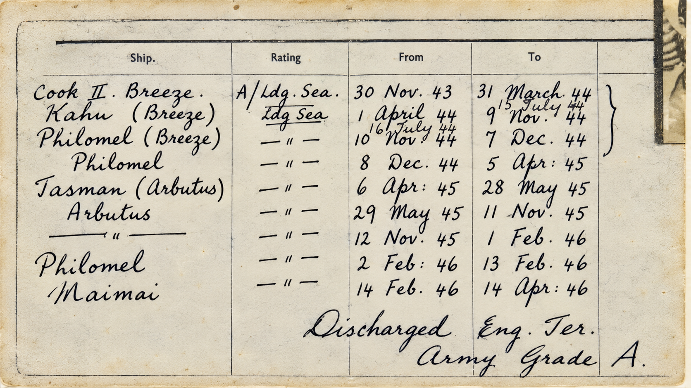

↻
New Zealand naval service, 1940–1946

| Ship / establishment as read | Rating | From | To | Remarks |
|---|---|---|---|---|
| Philomel (RNVR(A)) | AB (P) | 19 Aug 1940 | 27 Nov 1940 | |
| Philomel (Muritai) | AB | 28 Nov 1940 | 28 Mar 1941 | |
| Philomel | AB | 29 Mar 1941 | 4 Apr 1941 | |
| Victory (Drake) | AB | 5 Apr 1941 | 27 Nov 1941 | |
| AB | 8 Feb 1941 | 27 Nov 1941 | ||
| Drake IV (Tui) | AB | 28 Nov 1941 | 28 Feb 1942 | |
| Philomel (Tui) | AB | 1 Mar 1942 | 28 Aug 1942 | |
| Philomel | AB | 29 Aug 1942 | 22 Jan 1943 | From Cosgrove to Ph |
| Philomel (Cosgrove) | AB | 23 Jan 1943 | 15 Jul 1943 | V/O. 23/6 |
| —〃— | AB | 16 Jul 1943 | 26 Aug 1943 | Ex Tasman ?? to |
| Philomel (Muritai) | A/Ldg Sea (??) | 27 Aug 1943 | 29 Nov 1943 | Phil 17 April 45 |
| Cook II. Breeze | A/Ldg Sea | 30 Nov 1943 | 31 Mar 1944 | |
| Kahu (Breeze) | A/Ldg Sea | 1 Apr 1944 | 15 Jul 1944 | |
| Ldg Sea | 16 Jul 1944 | 9 Nov 1944 | ||
| Philomel (Breeze) | Ldg Sea | 10 Nov 1944 | 7 Dec 1944 | |
| Philomel | Ldg Sea | 8 Dec 1944 | 5 Apr 1945 | |
| Tasman (Arbutus) | Ldg Sea | 6 Apr 1945 | 28 May 1945 | |
| Arbutus | Ldg Sea | 29 May 1945 | 11 Nov 1945 | |
| —〃— | Ldg Sea | 12 Nov 1945 | 1 Feb 1946 | |
| Philomel | Ldg Sea | 2 Feb 1946 | 13 Feb 1946 | |
| Maimai | Ldg Sea | 14 Feb 1946 | 14 Apr 1946 |
The William “Bill” France wartime journal digital edition
This digital edition was researched, transcribed and compiled by Lyall Randell, New Zealand, Bill France's grandson, in 2026.
William “Bill” France was my grandfather. He died on 10 February 2004. This project was created to preserve his wartime journal, photographs and service history, and to place the people, places and events he recorded into their historical context.
The project began with Bill's surviving wartime journal and grew to bring together his journal entries, photographs, naval service record, medals, biographical research and the route of his wartime journey.
Bill's surviving journal begins on 19 September 1941 and ends on 3 August 1942. The original journal text is kept distinct from the expanded narrative and research notes. Historical context has been added to help identify people, places, ships, films, events and terminology encountered in the journal.
Identifications and interpretations that remain uncertain are intended to be presented as such rather than as established fact. Photographs, service records and other surviving material are used to supplement Bill's own account and provide context for his service.
Primary material includes Bill France's journal, his surviving photograph collection, his naval service record and his medals. The edition also draws on contemporary records and published historical sources cited throughout the journal's research notes and medal records.
Where handwriting or identification is uncertain, the aim is to preserve the original reading and document the uncertainty rather than silently substitute a modern interpretation.
Information is welcomed from descendants of people mentioned in the journal, families of HMNZS Tui's ship's company, researchers able to identify people or places in the photographs, and anyone holding photographs, documents or other material relating to William France or HMNZS Tui.
Contact: billfrancejournal@proton.me
Digital edition compiled by Lyall Randell
First completed edition — September 2026
New Zealand
Version 1.0 — 23 September 2026